Real Madrid 2-0 Manchester United
Trận giao hữu giữa Real Madrid vs MU đã kết thúc với chiến thắng 2-0 nghiêng về phía đội bóng Hoàng gia Tây Ban Nha nhờ các siêu phẩm được thực hiện bởi hai tân binh Jude Bellingham và Joselu.
Cập nhật đội hình ra sân MU
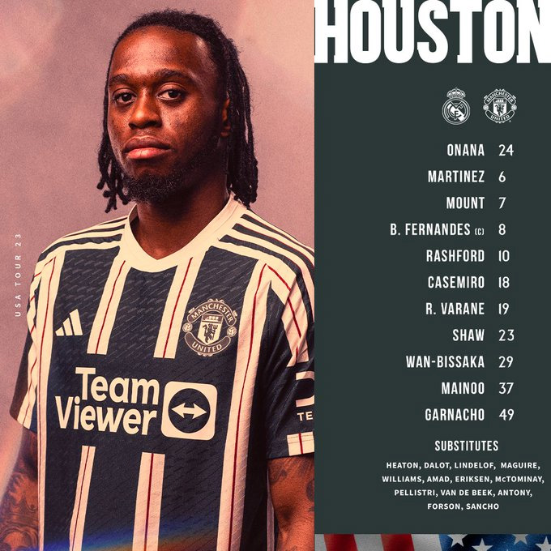
Cập nhật đội hình ra sân Real Madrid
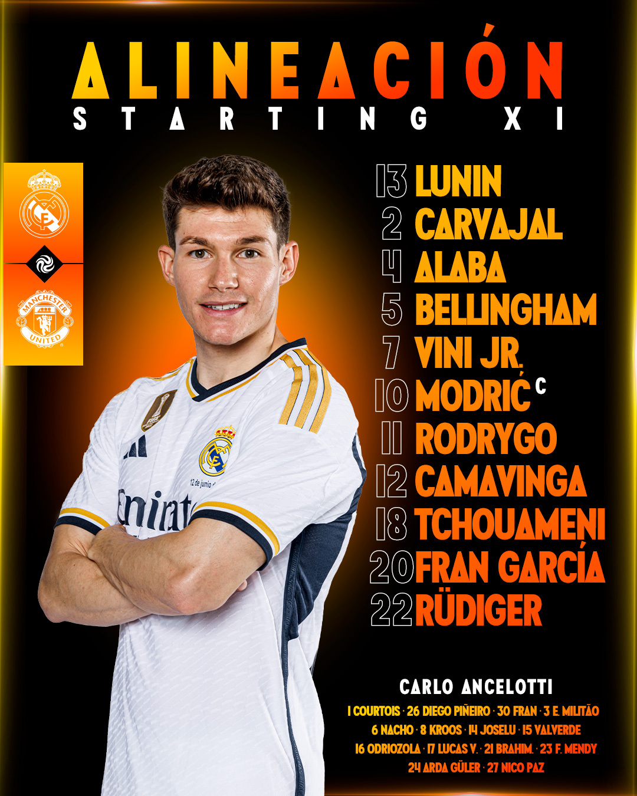
Nhận định Real Madrid vs MU
Real Madrid suýt chút nữa thất bại trong trận mở màn trước mùa giải của họ vào thứ Hai khi gã khổng lồ Ý AC Milan ghi hai bàn dẫn trước vào giờ nghỉ nhờ cú đánh đầu cận thành của Fikayo Tomori và một pha lập công tuyệt vời của Luka Romero.
Tuy nhiên, Los Blancos đã chiến đấu để lật ngược thế cờ và giành chiến thắng 3-2 tại Rose Bowl ở California, với việc Federico Valverde tận dụng sai lầm của thủ môn và một sai lầm trong phòng ngự để ghi một cú đúp trước khi Vinicius Junior ghi bàn ấn định chiến thắng 3-2.
Chuẩn bị cho cuộc sống không có Karim Benzema, Carlo Ancelotti đã quyết định sử dụng đội hình kim cương 4-4-2 trước câu lạc bộ cũ của ông là Milan và ông đã có thể thu được những điểm tích cực từ thử nghiệm này, với bản hợp đồng lớn mùa hè Jude Bellingham đã nhận được rất nhiều lời khen ngợi từ huấn luyện viên người Ý sau khi ra mắt.
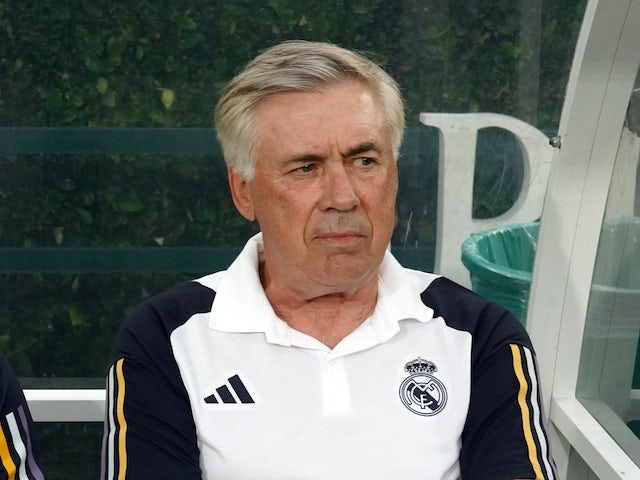
Mặc dù thua trong cuộc đua vô địch La Liga với Barcelona và để thua ở bán kết Champions League trước đội vô địch cuối cùng là Manchester City, Real Madrid vẫn thành công ở mùa giải trước với Copa del Rey, Siêu cúp UEFA và Cúp thế giới các câu lạc bộ. Tuy nhiên, Ancelotti đang hy vọng rằng đội bóng của ông, dù có hay không có thêm bất kỳ cầu thủ nào đến vào mùa hè có thể tạo ra một thách thức trên mọi mặt trận vào mùa 2023-24.
Sau khi đối đầu với Man United, Real Madrid sẽ chạm trán với các đối thủ La Liga Barcelona ở Texas và Juventus ở Florida trước khi trở lại Tây Ban Nha cho trận mở màn mùa giải mới gặp Athletic Bilbao vào ngày 12 tháng 8.
Một số hình ảnh trong trận đấu
Các cầu thủ MU đã có mặt trên sân chuẩn bị cho trận đấu
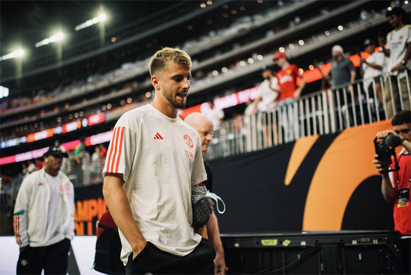 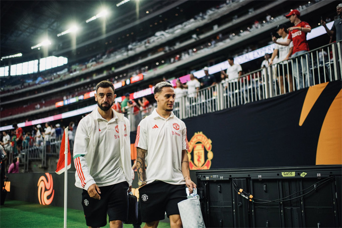 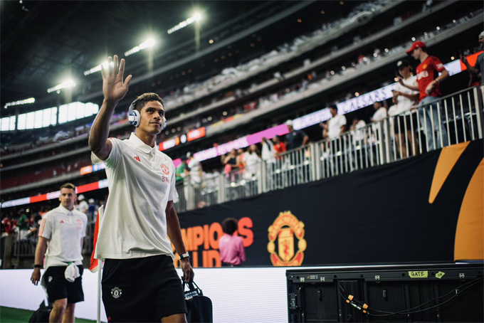 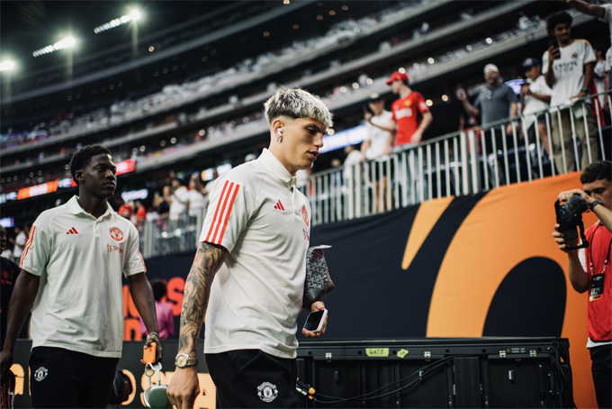 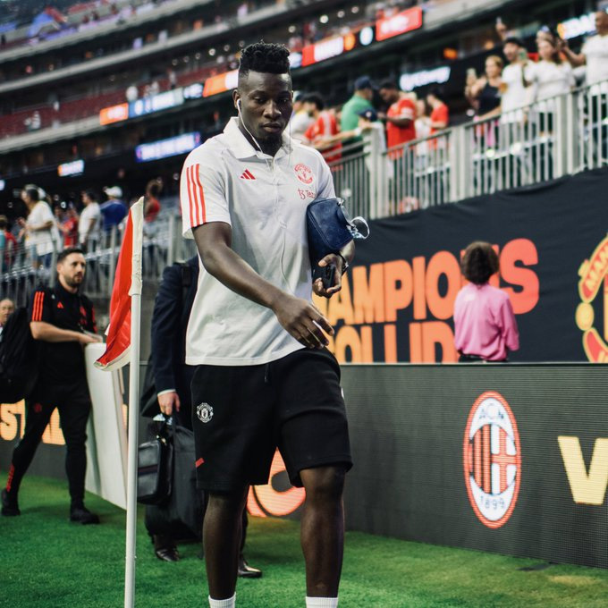 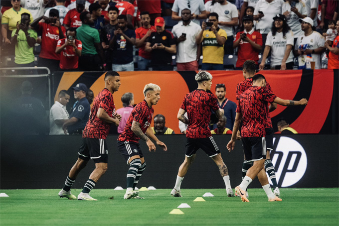 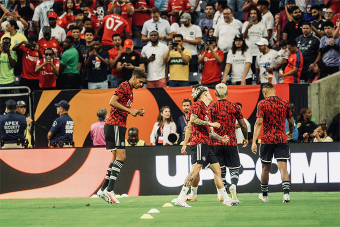 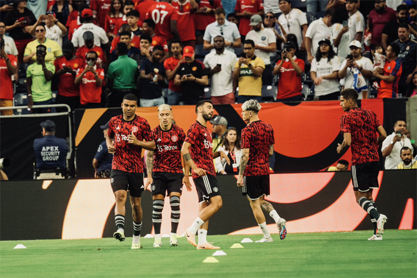
Các cầu thủ Real trong trận đấu
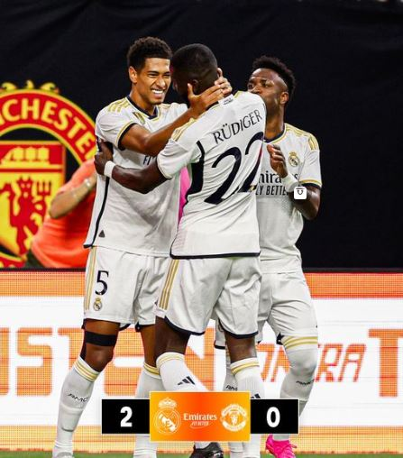


Đã có 109.318 khán giả tới sân Michigan theo dõi màn đại chiến Real vs MU năm 2014 và đó vẫn là một kỷ lục về số lượng NHM tới sân theo dõi một trận đấu tại Mỹ.
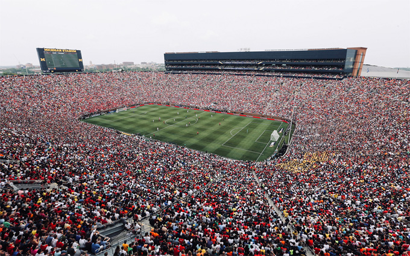Nói về trận đấu, HLV Erik ten hag cho biết: "Tôi đã ngủ ngon và bây giờ chúng ta lại tiếp tục! Hai câu lạc bộ lớn nhất thế giới, có lượng người hâm mộ lớn nhất, thật tuyệt khi được thi đấu với nhau.
Chúng tôi đã đối đầu với Arsenal, đội đang có phong độ cao, và giờ lại là một đối thủ lớn. Chúng tôi thực sự mong đợi nó. Tôi thực sự hy vọng chúng tôi có thể tiến thêm một bước nữa và nếu bạn muốn đối đầu và cạnh tranh với Real Madrid, bạn cần phải đạt đến đẳng cấp cao hơn".
Đề cập tới Onana, chiến lược gia người Hà Lan cho biết: "Bây giờ đã gần một tuần cậu ấy ở với chúng tôi và cậu ấy gần như đã hòa nhập. Cậu ấy cảm thấy thoải mái trong đội và tôi nghĩ đây là thời điểm thích hợp để cậu ấy ra sân".
Một điểm đáng chú ý là sân vận động tổ chức trận đấu này được trang bị máy điều hòa không khí, mang lại cảm giác dễ chịu khỏi cái nóng bên ngoài của Houston. Đây là một trận đấu lớn và là một bài kiểm tra tốt cho các nhân viên tại sân vận động NRG vì đây là một trong những địa điểm tổ chức World Cup 2026.
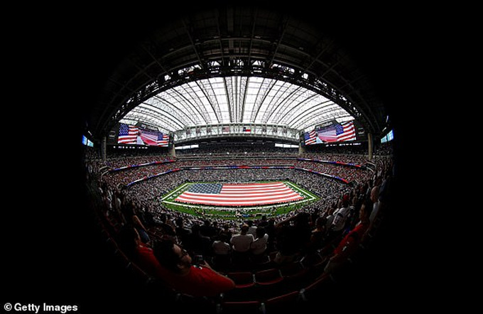
Sources: TẠP CHÍ ĐIỆN TỬ BÓNG ĐÁ
© copyright reserved
Contact me : giabaohxh@gmail.com